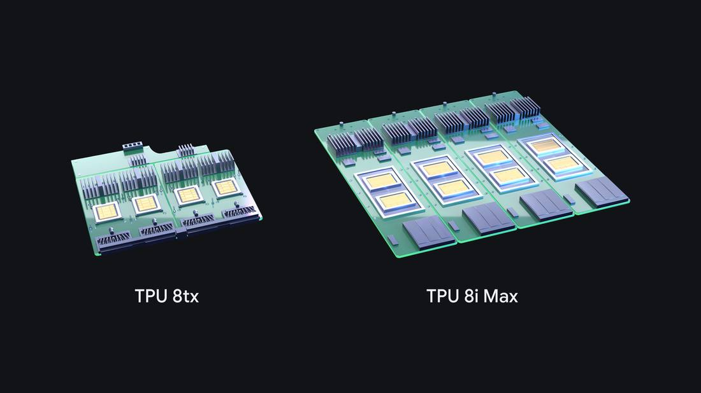
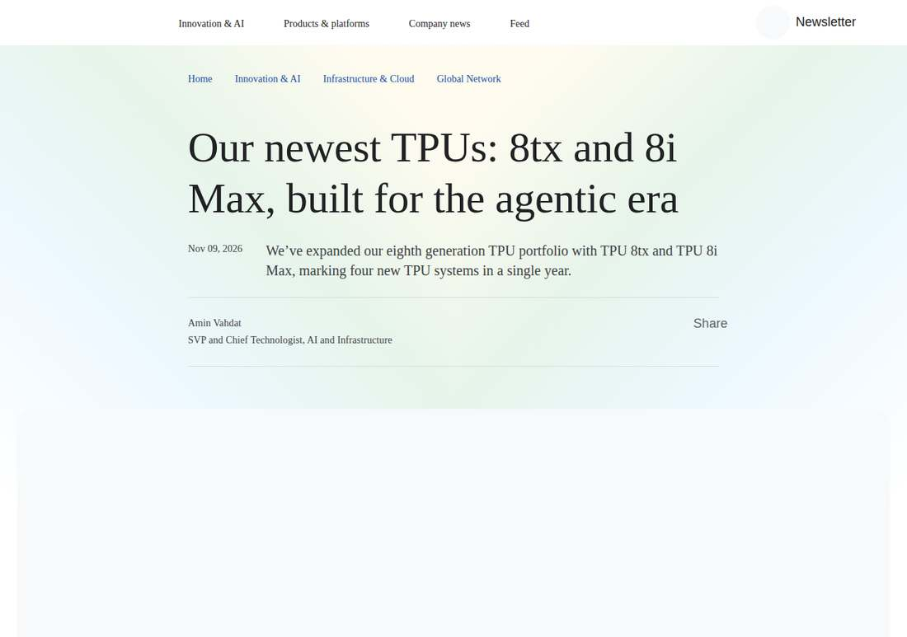

Google Adds TPU 8tx and 8i Max, Completing Four-System Eighth Generation
Google expanded its eighth-generation TPU portfolio on November 9, 2026 with TPU 8tx for secure, confidential inference and TPU 8i Max for massive context windows, its fourth TPU system launch of the year, pairing the 8tx with AMD EPYC hosts as its in-house silicon presses Nvidia's dominance.

- 01THE LAUNCH — Google announced TPU 8tx for secure, confidential inference and TPU 8i Max for massive context windows on November 9, 2026, completing a four-system eighth-generation TPU portfolio in a single year.
- 02THE DETAILS — TPU 8tx pairs TPU 8t silicon with 5th Gen AMD EPYC hosts for hardware-level confidential compute; TPU 8i Max doubles compute, SRAM, and HBM bandwidth per package; Alphabet shares rose more than 2% premarket.
- 03THE WATCHPOINT — Whether enterprise and government buyers adopt the confidential-compute configuration, whether independent benchmarks back Google's price-performance claims, and whether the TPU business keeps adding customers against Nvidia's Vera Rubin ramp.
WHAT HAPPENEDWhat Happened
Google expanded its eighth-generation TPU portfolio on November 9, 2026 with two new systems, TPU 8tx and TPU 8i Max, marking the first time the company has introduced four TPU systems in a single year. The portfolio now covers four distinct jobs: TPU 8t for large-scale training, TPU 8i for low-latency reasoning, TPU 8tx for secure and confidential inference, and TPU 8i Max for massive context windows and the highest compute density per rack.
TPU 8tx is built on the same silicon as TPU 8t and paired with fifth-generation AMD EPYC CPU hosts. It builds security into the hardware layer, keeping sensitive data and model weights protected and isolated even while in active use, a design aimed at regulated enterprises and governments running frontier or proprietary models alongside their most sensitive data. Google says the system delivers up to two times lower latency than TPU 8t with a near-zero performance penalty, and that teams can fine-tune models on private data, distill large models into smaller ones, and train agents through reinforcement learning on a single system without migrating sensitive data between clusters.
TPU 8i Max takes two low-latency TPU 8i chips and combines them onto a single package, delivering double the compute, double the SRAM, and double the HBM bandwidth of TPU 8i. Because it fits twice the silicon within the existing rack footprint, data centers can deploy significantly more computing power per square foot and per watt, aimed at workloads where dozens of agents work across an entire codebase or hours of video at once. The baseline eighth-generation systems, introduced at Google Cloud Next in April, offer up to 2.7 times better training performance for TPU 8t and 80% better inference price performance for TPU 8i versus the previous generation. Google says its TPUs are now a rapidly growing business with nearly 100 customers, including frontier labs, trading firms, retailers, and universities, and that the chips train and serve its own Gemini models.
WHY IT MATTERSGoogle is selling systems, not chips, and that is the point
Google's blog is careful to say these are new systems, not new chips, and the distinction is the strategy. Designing a chip takes years; repackaging existing silicon with different memory, networking, and security around it takes months. TPU 8tx is TPU 8t silicon with AMD EPYC hosts and confidential-compute packaging; TPU 8i Max is two TPU 8i chips in one package. That modularity lets Google answer two customer demands that emerged only this year, hardware-level data security for regulated agents and million-token context scale, without waiting for a new silicon generation.
The AMD pairing is the quietest telling detail. Google is not just challenging Nvidia with its own silicon; it is pairing its accelerator with AMD's server CPUs for the confidential-compute configuration, a cross-vendor stack aimed squarely at enterprise buyers who want an alternative to Nvidia's closed ecosystem. Alphabet shares rose more than 2% in premarket trading on the news, according to Reuters.
WHY IT MATTERSThe software push matters as much as the silicon
The announcement's second half is a software blitz aimed at the historic barrier to TPU adoption: ease of use. Google open-sourced TorchTPU last month so PyTorch code and Hugging Face models run natively, added a TPU agent suite in preview that plugs into Claude Code, Cursor, and Google Antigravity, open-sourced the XLA Serving Engine and TPU Sync, and made Cloud Pathways and GKE dynamic slicing generally available. The message is that TPUs should be as easy to use as general-purpose hardware.
The risk for Google is that these are still vendor claims on vendor benchmarks. The cited InferenceX and AgentX results come from Google's own stack, and neither Google nor Nvidia publishes list prices for flagship accelerators, so buyers cannot yet compare on price. What is verifiable is the cadence: four TPU systems in one year, with a broadcast the same morning, is Google treating its in-house silicon as a product line to be sold, not just an internal cost saver. That is the real challenge to Nvidia.
SIGNAL JUDGMENT — ANALYSISFour TPU systems in one year is Google selling silicon, not just saving on it
Tokenta Signal's judgment: TPU 8tx and TPU 8i Max are repackaged silicon, not new chips, and that is exactly why they matter. Google can now answer the two demands agents created this year, hardware-level confidentiality and million-token context, in months rather than a silicon generation. The AMD EPYC pairing on the 8tx shows Google is building a cross-vendor alternative to Nvidia's stack, not a walled garden. The open question is price and independent proof: no list prices, and the benchmarks are Google's own. But four systems in one year, with nearly 100 customers, means TPUs have crossed from internal cost saver to a product line sold against Nvidia, and the next test is whether enterprise buyers actually switch.
WHAT REMAINS UNCERTAINWhat Remains Uncertain
EVIDENCEEvidence

Google's official blog post 'Introducing TPU 8tx and TPU 8i Max', dated November 9, 2026 and read in full: Google expanded its eighth-generation TPU portfolio with TPU 8tx and TPU 8i Max, marking four new TPU systems in a single year. TPU 8i Max is built for massive context windows and the highest compute density per rack; TPU 8tx is built for secure and confidential inference. TPU 8tx is built on the same silicon as TPU 8t and paired with 5th Generation AMD EPYC CPU hosts, keeping sensitive data and model weights protected and isolated even while in active use, delivering up to 2x lower latency compared to TPU 8t with a near-zero performance penalty. TPU 8i Max combines two low-latency TPU 8i chips onto a single package, delivering double the compute, double the SRAM and double the HBM bandwidth of TPU 8i. TPU 8t and TPU 8i offer up to 2.7 times better training performance and 80% better inference price performance, respectively, versus the previous generation of TPUs. TPUs are now a rapidly growing business with nearly 100 customers, including frontier labs, trading firms, retailers, universities, and more. Reuters' November 9 report of Bloomberg News' account confirms the two variants, their purposes, and that Alphabet shares were up more than 2% in premarket trading.
PRIMARY SOURCESPrimary Sources
- Google Blog: Introducing TPU 8tx and TPU 8i Max
https://blog.google/innovation-and-ai/infrastructure-and-cloud/global-network/tpu-8i-max-and-8tx/ - Reuters: Google to introduce two variants of in-house chips, Bloomberg News reports
https://www.reuters.com/business/google-to-introduce-two-variants-its-in-house-chips-bloomberg-news-reports-2026-11-09/